Chapter 4 Differential expression analysis using basic R
4.1 Gene expression analysis of histone deacetylase 1 (HDAC1) knockout mouse.
This short tutorial should help to understand the basic principal of gene expression analysis using simple dataset and nearly basic R.
- Affymetrix microarray
- Dataset: GSE5583
- Paper: Mol Cell Biol 2006 Nov;26(21):7913-28. PMID: 16940178
- R code: Ahmed Moustafa
# Read the data into R
library (RCurl)
url = getURL ("http://bit.ly/GSE5583_data", followlocation = TRUE)
data = as.matrix(read.table (text = url, row.names = 1, header = T))
# Check the loaded dataset
dim(data) # Dimension of the dataset## [1] 12488 6# data shows gene experssion levels in 6 samples:
# rows correspond to samples (3 wild type WT and 3 knock-out KO)
# columns correspond to genes ids
head(data) # First few rows## WT.GSM130365 WT.GSM130366 WT.GSM130367 KO.GSM130368 KO.GSM130369 KO.GSM130370
## 100001_at 11.5 5.6 69.1 15.7 36.0 42.0
## 100002_at 20.5 32.4 93.3 31.8 14.4 22.9
## 100003_at 72.4 89.0 79.2 80.5 130.1 86.7
## 100004_at 261.0 226.2 365.1 432.0 447.3 288.1
## 100005_at 1086.2 1555.6 1487.1 1062.2 1365.9 1436.2
## 100006_at 49.7 52.9 15.0 25.8 48.8 54.8###################
# Exploratory plots
###################
# Check the behavior of the data
hist(data, col = "gray", main="GSE5583 - Histogram")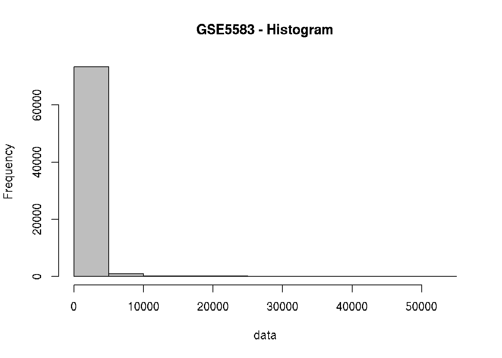
# Log2 transformation (why?)
data2 = log2(data)
# Check the behavior of the data after log-transformation
hist(data2, col = "gray", main="GSE5583 (log2) - Histogram")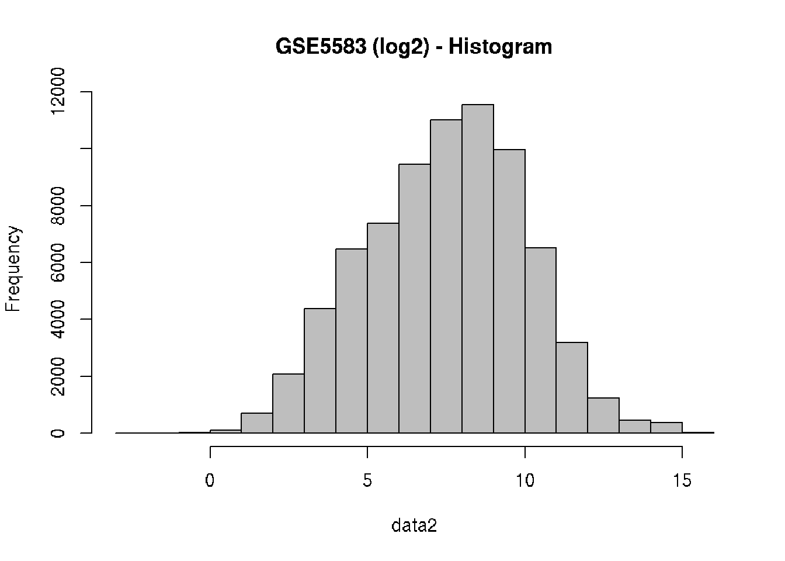
# Boxplot
boxplot(data2, col=c("darkgreen", "darkgreen", "darkgreen",
"darkred", "darkred", "darkred"),
main="GSE5583 - boxplots", las=2)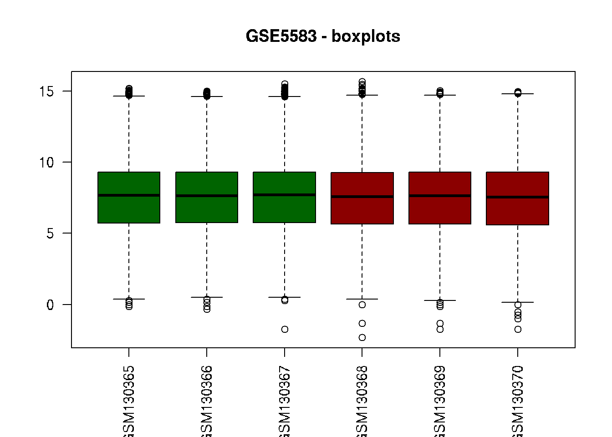
# Hierarchical clustering of the "samples" based on
# the correlation coefficients of the expression values
hc = hclust(as.dist(1-cor(data2)))
plot(hc, main="GSE5583 - Hierarchical Clustering")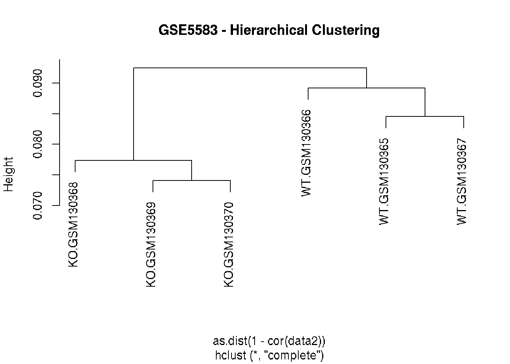
#######################################
# Differential expression (DE) analysis
#######################################
# Separate the two conditions into two smaller data frames
wt = data2[,1:3]
ko = data2[,4:6]
# Compute the means of the samples of each condition
wt.mean = apply(wt, 1, mean)
ko.mean = apply(ko, 1, mean)
head(wt.mean)## 100001_at 100002_at 100003_at 100004_at 100005_at 100006_at
## 4.039868 5.306426 6.320360 8.120503 10.408872 5.089087head(ko.mean)## 100001_at 100002_at 100003_at 100004_at 100005_at 100006_at
## 4.844978 4.452076 6.597451 8.576804 10.318839 5.358071# Just get the maximum of all the means
limit = max(wt.mean, ko.mean)
# Scatter plot
plot(ko.mean ~ wt.mean, xlab = "WT", ylab = "KO",
main = "GSE5583 - Scatter", xlim = c(0, limit), ylim = c(0, limit))
# Diagonal line
abline(0, 1, col = "red")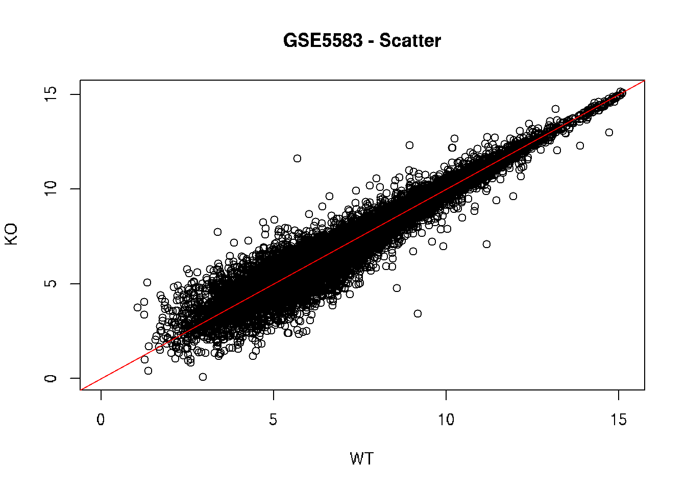
# Compute fold-change (biological significance)
# Difference between the means of the conditions
fold = wt.mean - ko.mean
# Histogram of the fold differences
hist(fold, col = "gray")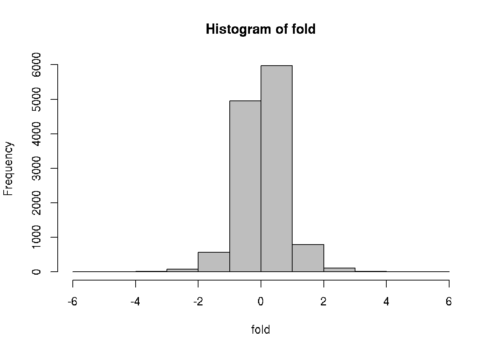
# Compute statistical significance (using t-test)
pvalue = NULL # Empty list for the p-values
tstat = NULL # Empty list of the t test statistics
for(i in 1 : nrow(data)) { # For each gene :
x = wt[i,] # WT of gene number i
y = ko[i,] # KO of gene number i
# Compute t-test between the two conditions
t = t.test(x, y)
# Put the current p-value in the pvalues list
pvalue[i] = t$p.value
# Put the current t-statistic in the tstats list
tstat[i] = t$statistic
}
head(pvalue)## [1] 0.5449730 0.3253745 0.3287830 0.1892376 0.6928410 0.7180077# Histogram of p-values (-log10)
hist(-log10(pvalue), col = "gray")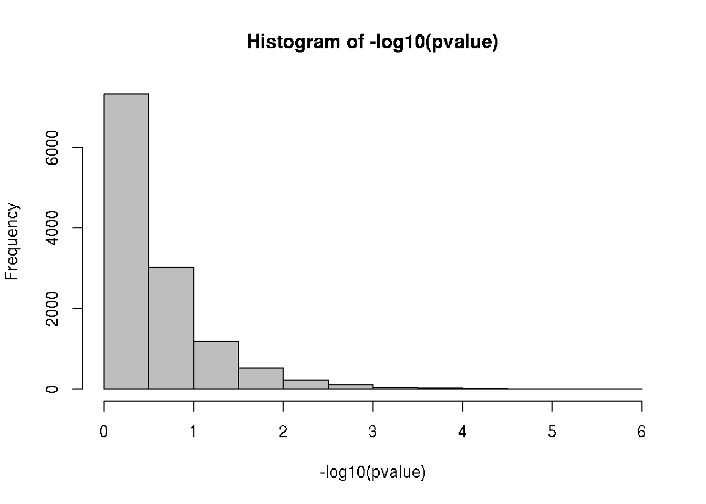
# Volcano: put the biological significance (fold-change)
# and statistical significance (p-value) in one plot
plot(fold, -log10(pvalue), main = "GSE5583 - Volcano")
fold_cutoff = 2
pvalue_cutoff = 0.01
abline(v = fold_cutoff, col = "blue", lwd = 3)
abline(v = -fold_cutoff, col = "red", lwd = 3)
abline(h = -log10(pvalue_cutoff), col = "green", lwd = 3)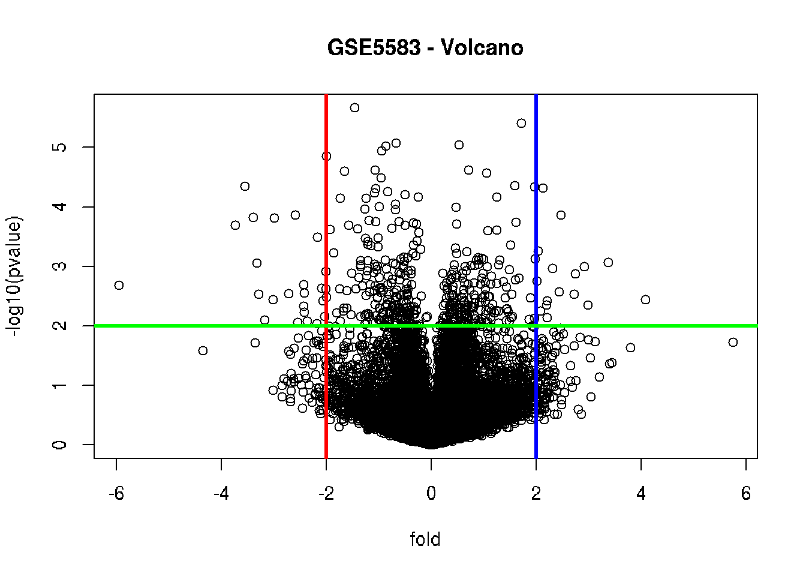
# Screen for the genes that satisfy the filtering criteria
# Fold-change filter for "biological" significance
filter_by_fold = abs(fold) >= fold_cutoff
dim(data2[filter_by_fold, ])## [1] 210 6# P-value filter for "statistical" significance
filter_by_pvalue = pvalue <= pvalue_cutoff
dim(data2[filter_by_pvalue, ])## [1] 429 6# Combined filter (both biological and statistical)
filter_combined = filter_by_fold & filter_by_pvalue
filtered = data2[filter_combined,]
dim(filtered)## [1] 42 6head(filtered)## WT.GSM130365 WT.GSM130366 WT.GSM130367 KO.GSM130368 KO.GSM130369 KO.GSM130370
## 100716_at 4.852998 4.906891 5.626439 7.572890 7.791163 7.299208
## 100914_at 10.340852 9.917074 10.250062 12.248787 12.185526 12.127124
## 101368_at 9.937227 10.204693 10.385215 12.270354 12.213499 12.078184
## 101550_at 5.526695 5.439623 6.221104 2.137504 2.906891 2.035624
## 101635_f_at 7.105385 6.722466 6.943687 5.266787 4.842979 4.643856
## 101883_s_at 5.768184 6.127221 5.133399 11.564292 11.679568 11.663514# Let's generate the volcano plot again,
# highlighting the significantly differential expressed genes
plot(fold, -log10(pvalue), main = "GSE5583 - Volcano #2")
points (fold[filter_combined], -log10(pvalue[filter_combined]),
pch = 16, col = "red")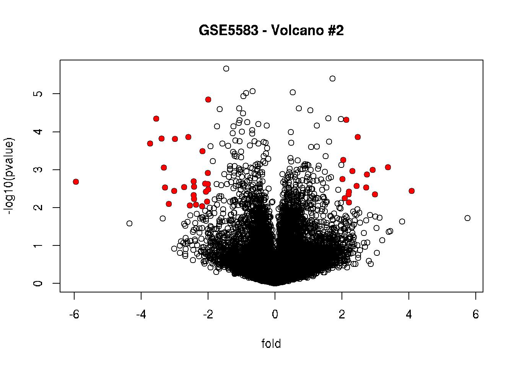
# Highlighting up-regulated in red and down-regulated in blue
plot(fold, -log10(pvalue), main = "GSE5583 - Volcano #3")
points (fold[filter_combined & fold < 0],
-log10(pvalue[filter_combined & fold < 0]),
pch = 16, col = "red")
points (fold[filter_combined & fold > 0],
-log10(pvalue[filter_combined & fold > 0]),
pch = 16, col = "blue")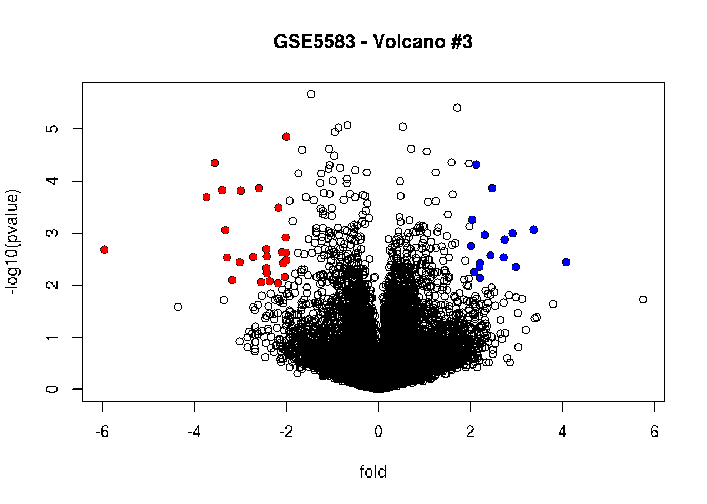
# Cluster the rows (genes) & columns (samples) by correlation
rowv = as.dendrogram(hclust(as.dist(1-cor(t(filtered)))))
colv = as.dendrogram(hclust(as.dist(1-cor(filtered))))
# Generate a heatmap
heatmap(filtered, Rowv=rowv, Colv=colv, cexCol=0.7)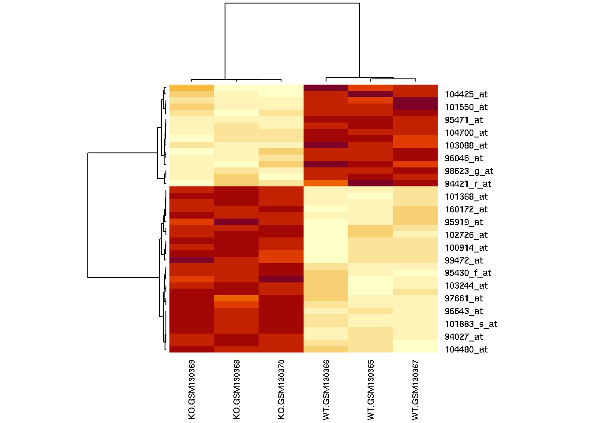
library(gplots)
# Enhanced heatmap
heatmap.2(filtered, Rowv=rowv, Colv=colv, cexCol=0.7,
col = rev(redblue(256)), scale = "row",
trace="none", density.info="none")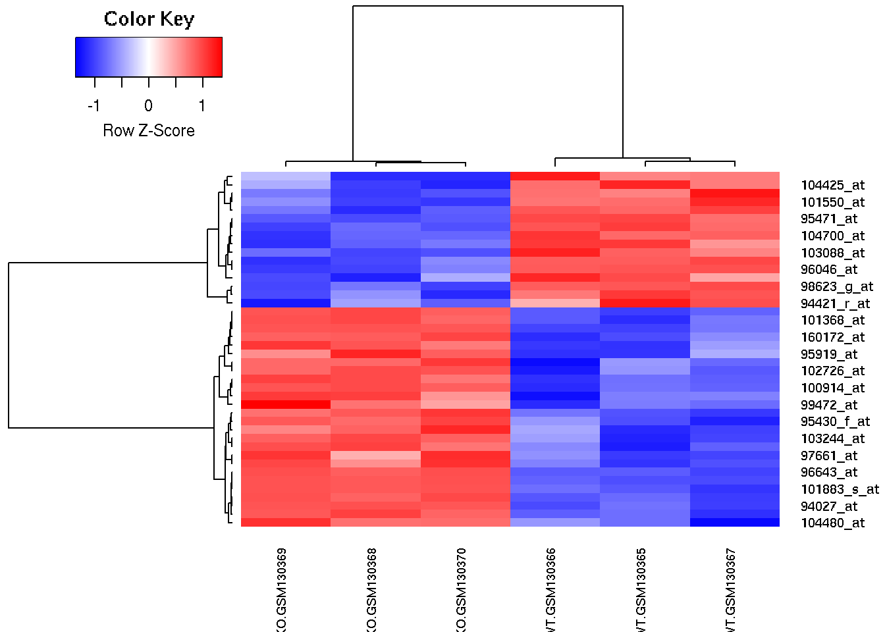
# Save the heatmap to a PDF file
pdf ("GSE5583_DE_Heatmap.pdf")
heatmap.2(filtered, Rowv=rowv, Colv=colv, cexCol=0.7,
col = rev(redblue(256)), scale = "row")
dev.off()
# Save the DE genes to a text file
write.table (filtered, "GSE5583_DE.txt", sep = "\t",
quote = FALSE)n = nrow(filtered)
cor.table = NULL
x = NULL
y = NULL
cor.val = NULL
cor.sig = NULL
for (i in 1 : (n-1)) {
x_name = rownames(filtered)[i]
x_exps = filtered[i, ]
for (j in (i+1) : n) {
y_name = rownames(filtered)[j]
y_exps = filtered[j, ]
output = cor.test(x_exps,y_exps)
x = c(x, x_name)
y = c(y, y_name)
cor.val = c(cor.val, output$estimate)
cor.sig = c(cor.sig, output$p.value)
}
}
cor.table = data.frame (x, y, cor.val, cor.sig)
dim(cor.table)## [1] 861 4head(cor.table)## x y cor.val cor.sig
## 1 100716_at 100914_at 0.9732295 0.0010653980
## 2 100716_at 101368_at 0.9897688 0.0001564799
## 3 100716_at 101550_at -0.9060431 0.0128271221
## 4 100716_at 101635_f_at -0.9433403 0.0047245418
## 5 100716_at 101883_s_at 0.9508680 0.0035616301
## 6 100716_at 102712_at 0.9676037 0.0015572795sig_cutoff = 0.001
cor.filtered = subset (cor.table, cor.sig < sig_cutoff)
dim(cor.filtered)## [1] 314 4head(cor.filtered)## x y cor.val cor.sig
## 2 100716_at 101368_at 0.9897688 1.564799e-04
## 8 100716_at 103088_at -0.9761495 8.464861e-04
## 10 100716_at 103299_at -0.9991089 1.190632e-06
## 14 100716_at 104700_at -0.9792543 6.411095e-04
## 15 100716_at 160172_at 0.9833552 4.132702e-04
## 16 100716_at 160943_at 0.9814703 5.118449e-04